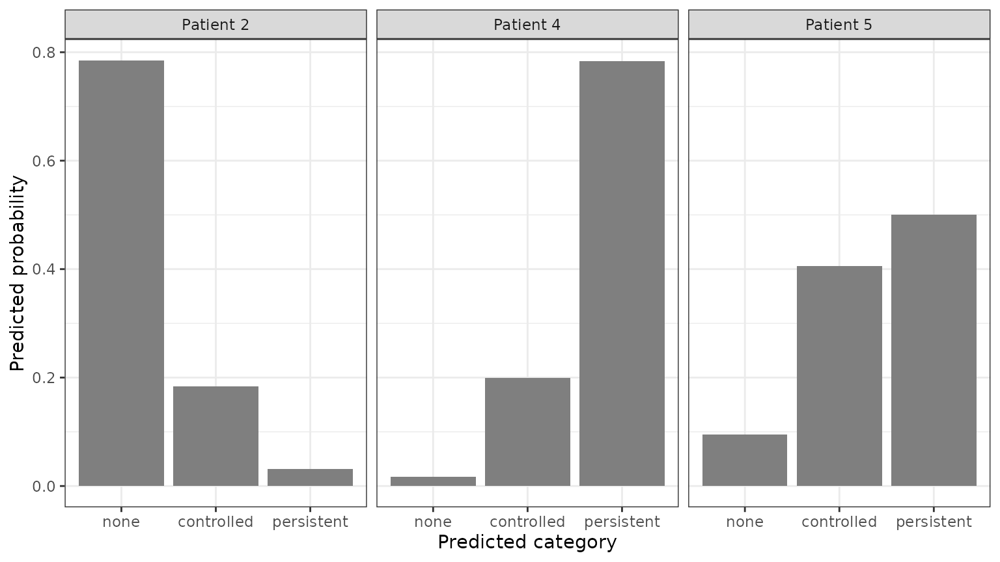
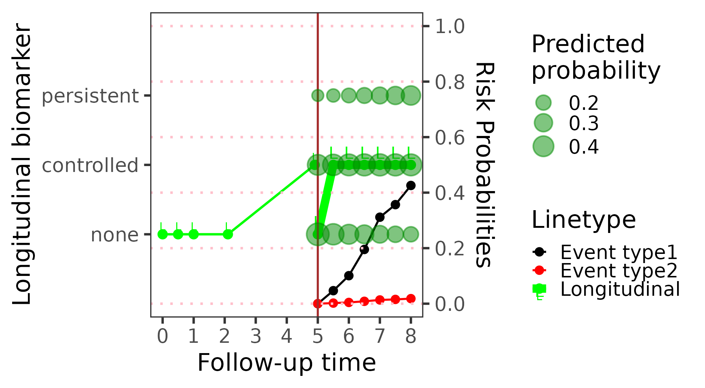
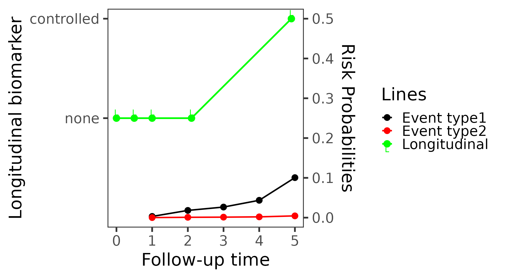
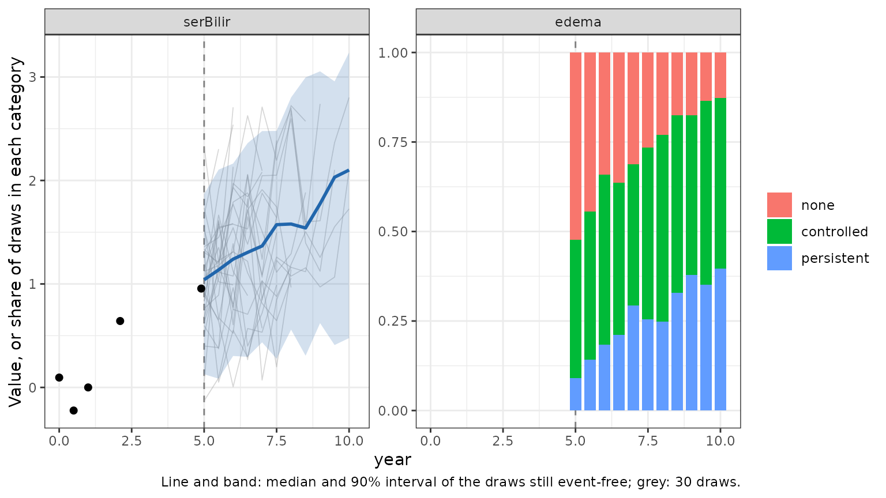

Categorical biomarkers
Source:vignettes/articles/categorical-biomarkers.Rmd
categorical-biomarkers.RmdNot every repeated measurement is a number. A symptom can be graded (none, mild, severe), a finding can be present or absent, a disease can be staged. BJM accepts such ordinal biomarkers, including binary ones, next to continuous ones, and uses them for every prediction: the risk of an event, the future category of the biomarker itself, and simulated futures.
| Step | Function | With a categorical biomarker |
|---|---|---|
| Fit | longitudinalSub() |
an ordered-factor response is fit as an ordinal biomarker |
| Predict | predictRisk() |
the observed categories inform the risk |
| Predict | predictLongitudinal() |
the probability of each category at a future time |
| Plot |
predictPlot(), riskPlot()
|
the categories on the biomarker axis |
| Simulate | simulateTrajectory() |
simulated categories |
Fitting an ordinal biomarker needs the ordinal
package (in Suggests):
library(BJM)
data(pbc3)
requireNamespace("ordinal", quietly = TRUE)How BJM models a category
Behind each ordinal measurement, BJM assumes a continuous latent
score that follows a linear mixed model, just like a continuous
biomarker, and that is cut into the observed categories at estimated
thresholds. This is a probit cumulative link mixed model, fit with
ordinal::clmm(). A binary biomarker is the special case of
two categories and one threshold.
The latent scores and the continuous biomarkers share one joint
random-effects distribution (a Gaussian copula). So a patient’s
categories tell the model about their continuous biomarkers and the
other way round, and both inform the event risk.
longitudinalSub() estimates this joint covariance by
maximum likelihood, with an EM algorithm that integrates over the
ordinal random effects by adaptive Gauss–Hermite quadrature; with more
than four ordinal random effects in all it switches to a stochastic
approximation EM.
The data
edema in pbc3 is recorded at every visit in
three ordered categories: no edema, edema without diuretics or resolved
by them, and edema despite diuretics. We give the categories short names
and make the column an ordered factor, which is how BJM
recognizes an ordinal biomarker. The order of the levels is the order of
the categories.
pbc3$edema <- factor(pbc3$edema, labels = c("none", "controlled", "persistent"),
ordered = TRUE)
table(pbc3$edema)
#>
#> none controlled persistent
#> 1401 379 165Edema changes during follow-up for many patients:
changes <- tapply(as.integer(pbc3$edema), pbc3$id, function(x) length(unique(x)) > 1)
sum(changes)
#> [1] 146Fitting
The survival sub-model is the usual one, here with competing risks (death and transplantation, see the Competing risks article):
survival_fit <- survivalSub(pbc3[!duplicated(pbc3$id), ],
Surv(years, status3) ~ age + sex,
status4 ~ years + age + sex)The ordinal biomarker gets a formula and random effects like any
other. Because edema is an ordered factor,
longitudinalSub() fits it as ordinal and
serBilir as continuous;
biomarker_type = c("continuous", "ordinal") would say the
same explicitly. The model has no intercept: the thresholds take its
place.
long_fit <- longitudinalSub(
pbc3[pbc3$status3 == 1, ],
list(serBilir = serBilir ~ year + age + sex + years + years:year,
edema = edema ~ year + age + years + years:year),
list(serBilir = ~ year | id, edema = ~ 1 | id)
)
long_fit$biomarker_type
#> [1] "continuous" "ordinal"(ordinal::clmm() may warn about a non-finite
log-likelihood at an intermediate iteration of its optimizer; this one
does, and the warning is hidden above. It is harmless when the fit
converges, as it does here: the largest gradient at the optimum is below
0.01.)
long_fit
#>
#> Call:
#> longitudinalSub(M = 2 longitudinal outcomes)
#>
#> =================================================================
#> Longitudinal Sub-model(s)
#> -----------------------------------------------------------------
#> [1] serBilir (continuous)
#> Formula: serBilir ~ year + age + sex + years + years:year
#>
#> Value SE t p-value
#> (Intercept) 2.424554 0.384604 6.304 5.13e-10 ***
#> year 0.442242 0.042957 10.295 < 2e-16 ***
#> age -0.011675 0.005785 -2.018 0.0439 *
#> sex 0.078449 0.167140 0.469 0.6390
#> years -0.204130 0.021557 -9.469 < 2e-16 ***
#> year:years -0.027852 0.006112 -4.557 6.12e-06 ***
#> ---
#> Signif. codes: 0 '***' 0.001 '**' 0.01 '*' 0.05 '.' 0.1 ' ' 1
#>
#> Residual std. error (sigma): 0.4186
#> n (subjects) = 169, N (observations) = 872
#> Log-likelihood: -772.87
#> AIC: 1565.74, BIC: 1613.45
#>
#> -----------------------------------------------------------------
#> [2] edema (ordinal)
#> Formula: edema ~ year + age + years + years:year
#>
#> Value SE z p-value
#> year 0.68832 0.09263 7.431 1.08e-13 ***
#> age 0.03636 0.01152 3.156 0.00160 **
#> years -0.31621 0.04716 -6.705 2.01e-11 ***
#> year:years -0.03090 0.01030 -2.999 0.00271 **
#> ---
#> Signif. codes: 0 '***' 0.001 '**' 0.01 '*' 0.05 '.' 0.1 ' ' 1
#>
#> Cumulative thresholds (probit link):
#> none|controlled controlled|persistent
#> 1.5776 3.1078
#>
#> n (subjects) = 169, N (observations) = 872
#> Log-likelihood: -606.53
#> AIC: 1227.06, BIC: 1260.45
#>
#> =================================================================
#> Multivariate Random-Effects Covariance Matrix (D)
#> -----------------------------------------------------------------
#> (Intercept)_1 year_1 (Intercept)_2
#> (Intercept)_1 0.6005 -0.0205 0.1795
#> year_1 -0.0205 0.0180 0.0086
#> (Intercept)_2 0.1795 0.0086 1.8783
#> =================================================================For edema, the printed fit shows the coefficients of the
latent score and the two thresholds between the three categories. Edema
becomes more likely over follow-up (year) and the closer a
patient is to the event (years). The last table is the
joint covariance of the random effects: the edema intercept is
positively correlated with the bilirubin intercept, so patients with
more edema tend to have higher bilirubin.
A binary biomarker
A two-level factor is a binary biomarker, fit the same way. Here
ascites (No/Yes) is added as a
third biomarker:
long_fit_3 <- longitudinalSub(
pbc3[pbc3$status3 == 1, ],
list(serBilir ~ year + age + sex + years + years:year,
edema ~ year + age + years + years:year,
ascites ~ year + years),
list(~ year | id, ~ 1 | id, ~ 1 | id)
)
long_fit_3$biomarker_type
#> [1] "continuous" "ordinal" "ordinal"
round(cov2cor(long_fit_3$Sigma_fit), 2)
#> (Intercept)_1 year_1 (Intercept)_2 (Intercept)_3
#> (Intercept)_1 1.00 -0.19 0.18 0.17
#> year_1 -0.19 1.00 0.07 0.31
#> (Intercept)_2 0.18 0.07 1.00 0.85
#> (Intercept)_3 0.17 0.31 0.85 1.00Edema and ascites are strongly correlated (0.85): both reflect fluid retention.
Predicting the event risk with predictRisk()
Patient 2 had no edema at the first four visits, and controlled edema at the visit just before year 5:
patient <- pbc3[pbc3$id == 2 & pbc3$year <= 5, ]
patient$years <- NA
patient$status4 <- NA
patient[, c("year", "serBilir", "edema")]
#> year serBilir edema
#> 3 0.0000000 0.09531018 none
#> 4 0.4983025 -0.22314355 none
#> 5 0.9993429 0.00000000 none
#> 6 2.1027270 0.64185389 none
#> 7 4.9008871 0.95551145 controlledpredictRisk() is called as usual. With an ordinal
biomarker, each patient’s likelihood includes the probability of their
observed categories. With one ordinal random effect, as here, BJM
computes it by numerical integration over that random effect, so the
results are exact and the same on every run.
risk <- predictRisk(list(patient, patient), long_fit, survival_fit,
prediction_time = 5, horizon = 3, time_variable = "year",
survival_variable_all = list(), survival_trans_function = list())
risk
#>
#> =================================================================
#> Dynamic Prediction - Event Risk
#> -----------------------------------------------------------------
#> Competing risks : Yes
#> Subjects : 1
#> -----------------------------------------------------------------
#>
#> Subject Cause 1 Risk Cause 2 Risk Total Risk
#> 2 0.4258 0.0182 0.444
#>
#> =================================================================The categories matter. Had the last visit shown no edema, the predicted risk of death within three years would be about half as large:
no_edema <- patient
no_edema$edema[nrow(no_edema)] <- "none"
risk_no_edema <- predictRisk(list(no_edema, no_edema), long_fit, survival_fit,
prediction_time = 5, horizon = 3, time_variable = "year",
survival_variable_all = list(), survival_trans_function = list())
c(observed = unname(risk$risk_prob_1), if_no_edema = unname(risk_no_edema$risk_prob_1))
#> observed if_no_edema
#> 0.4258237 0.2350548The categories in the prediction data are matched to those of the fit by their labels, so a character column or a factor with its levels in a different order works too; a category the model was not fit with is an error.
Predicting the future category with
predictLongitudinal()
For an ordinal biomarker, predictLongitudinal() predicts
the probability of each category at
prediction_time + horizon, for a patient still event-free
then. Here for three patients, one year after year 3:
three <- pbc3[pbc3$id %in% c(2, 4, 5) & pbc3$year <= 3, ]
three$years <- NA
three$status4 <- NA
edema_pred <- predictLongitudinal(bio_i = 2, list(three, three), long_fit, survival_fit,
prediction_time = 3, horizon = 1, time_variable = "year",
survival_variable_all = list(), survival_trans_function = list())
edema_pred
#>
#> =================================================================
#> Dynamic Prediction - Future Biomarker
#> -----------------------------------------------------------------
#> Categories : 3
#> Subjects : 3
#> -----------------------------------------------------------------
#>
#> Subject P(none) P(controlled) P(persistent) Most.likely
#> 2 0.7851 0.1837 0.0313 none
#> 4 0.0173 0.1992 0.7835 persistent
#> 5 0.0947 0.4054 0.4999 persistent
#>
#> P(.) = predicted probability of each category; Most.likely = its mode.
#>
#> =================================================================In the returned object, Y_density holds the
probabilities (one column per patient), Y_all the category
codes 1, 2, 3 with their labels in the
"category_labels" attribute, and Y_predict the
code of the most likely category. plot() draws the
probabilities:
plot(edema_pred)
With bio_i = NULL every biomarker is predicted in one
call, continuous and ordinal alike:
both <- predictLongitudinal(bio_i = NULL, list(three, three), long_fit, survival_fit,
prediction_time = 3, horizon = 1, time_variable = "year",
survival_variable_all = list(), survival_trans_function = list())
names(both)
#> [1] "serBilir" "edema"
both$edema$Y_density
#> 2 4 5
#> [1,] 0.78507044 0.01728125 0.09469616
#> [2,] 0.18366320 0.19922645 0.40543314
#> [3,] 0.03126594 0.78349229 0.49987070Plotting a patient’s predictions
predictPlot() shows the history of one biomarker, chosen
with bio_his, with its categories on the vertical axis, the
risks of the two event types, and the predicted category probabilities
as the horizon grows, as circles whose size is the probability:
predictPlot(list(patient, patient), long_fit, survival_fit,
prediction_time = 5, horizon = seq(0, 3, 0.5), time_variable = "year",
survival_variable_all = list(), survival_trans_function = list(),
bio_his = 2, bio_pred = 2)
riskPlot() moves the landmark instead; the risk of death
rises when the edema appears:
riskPlot(list(patient, patient), long_fit, survival_fit,
prediction_time = c(1, 2, 3, 4, 5), bio_i = 2, horizon = 1, time_variable = "year",
survival_variable_all = list(), survival_trans_function = list())
Simulated futures with simulateTrajectory()
Simulated futures draw a latent score for the ordinal biomarker and cut it at the thresholds, so the draws are categories:
sims <- simulateTrajectory(list(patient, patient), long_fit, survival_fit,
prediction_time = 5, times = seq(5, 10, 0.5), time_variable = "year",
survival_variable_all = list(), survival_trans_function = list(),
n_sim = 300, seed = 1)
head(as.data.frame(sims)[, c("sim", "year", "serBilir", "edema")])
#> sim year serBilir edema
#> 1 1 5.0 1.335290 controlled
#> 2 1 5.5 1.189156 controlled
#> 3 1 6.0 1.940063 persistent
#> 4 1 6.5 2.625956 persistent
#> 5 1 7.0 2.094178 persistent
#> 6 1 7.5 NA <NA>plot() shows, at each time, the share of the draws still
event-free in each category:
plot(sims)
Things to watch for
-
Make the response an ordered factor, with its
levels in the order of the categories, or pass
biomarker_type. A numeric column is fit as a continuous biomarker. -
Formulas. An ordinal biomarker’s design matrix is
built from the data at hand, not from the training data, so terms whose
values depend on the other rows – orthogonal
poly(),splines::ns()/bs(),factor()– give wrong predictions;longitudinalSub()warns about them. Usepoly(..., raw = TRUE),I(x^2)orlog()instead (see the Nonlinear terms article). -
Two or more ordinal random effects. The probability
of a patient’s observed categories is then computed by Monte Carlo
(
mvtnorm::pmvnorm()) instead of numerical integration, with an error in about the fourth significant digit (each patient’s draws use a fixed seed, so the results are still the same on every run), and predictions are several times slower.n_coresinpredictRisk()andpredictLongitudinal()spreads the patients over several cores (on Linux and macOS). -
Speed. That probability is needed at every point of
the integration grid, so a prediction with an ordinal biomarker takes
longer than with continuous ones only. Predicting a continuous
biomarker’s future value in a model with an ordinal one is the slowest
case; fixed
bandcount2/bandcount3values (checked withcheckBandcountConvergence()) are faster than the automatic ones. - Random effects. Up to four ordinal random effects in all (e.g. two ordinal biomarkers with a random intercept and slope each) are integrated by quadrature; beyond that, the stochastic approximation EM is less precise (random-effects variances off by about 5% in simulations).